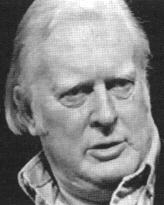

|
In a classic 1962 essay, Michael Scriven, a philosopher of science (and one of my mentors), argued that psi research was a field that had amassed a substantial body of data for which there was no adequate theory.  Michael Scriven (courtesy Thinking Allowed Productions) He contrasted this with the field of psychoanalysis which had a substantial theory that lacked adequate empirical support. In recent years, some psi researchers have taken issue with this point of view -- claiming that they are, indeed, actively engaged in producing theories of psi., In particular, as Gertrude Schmeidler has demonstrated in her book, Parapsychology and Psychology, parapsychologists generally operate on the theoretical premise that psi is a psychological function. In fact, since 1962, there have been many
more efforts to develop theories of psi than can be presented in Section
IV. While data has accumulated to support some theories, they are all inherently
unsatisfactory. Psychological theories fail to account for the uncanny
transfer of information which psi implies. Physical theories which deal
with the issue of information transfer generally fail to address crucial
psychological issues. The bottom line is simply this: a theories of psi
cannot be complete without a theory of consciousness -- and this is what
we lack. Yet we are slowly making progress.
References . Michael Scriven, "The Frontiers of Psychology: Psychoanalysis and Parapsychology," in R. G. Colodny (ed.), Frontiers of Science and Philosophy. Pittsburgh,, PA: University of Pittsburgh Press, 1962, pp. 78-129. . H. J. Irwin, Introduction to Parapsychology. Jefferson, NC: McFarland, 1989, p. 149. . Douglas Stokes, "Theoretical Parapsychology," in S. Krippner (ed.), Advances in Parapsychological Research 5. Jefferson, NC: McFarland, 1989, p. 189. . Gertrude Schmeidler, Parapsychology and Psychology. Jefferson, NC: McFarland, 1989. |